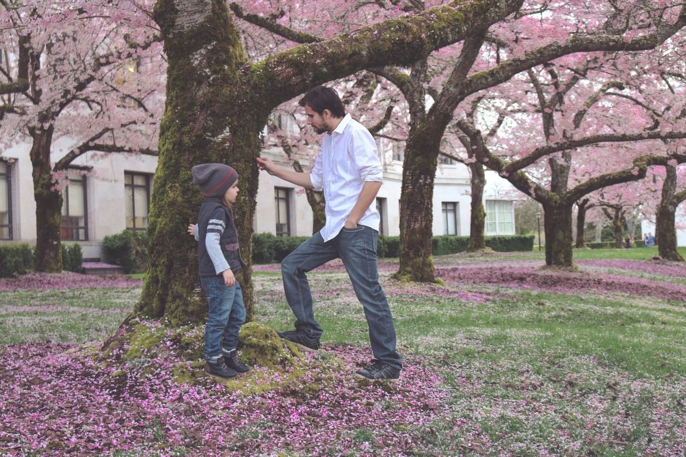
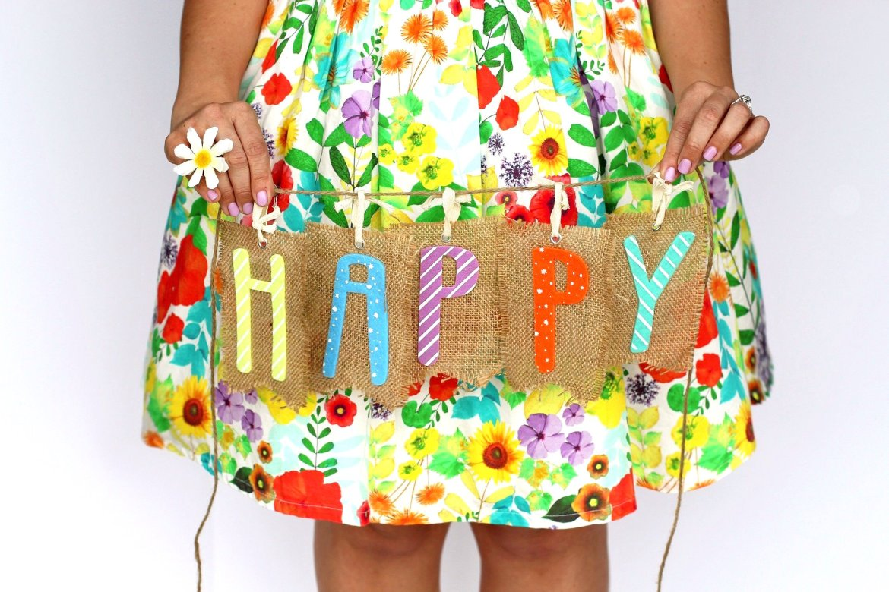

El amor sin condiciones es el origen de la felicidad, por eso las muestras de amor incondicional favorecen el desarrollo de nuestros hijos, su salud afectiva, su autoestima y su personalidad.
Los niños necesitan desde bebés una presencia física y emocional constante, cariñosa, protectora y empática. Necesitan sentir amor, compañía y seguridad. Si lloran, necesitan consuelo. Si tienen miedo, necesitan sentirse protegidos. Si sienten alegría, necesitan compartirla. Si desean lanzarse a explorar el mundo, necesitan apoyo y confianza.
Cuando un niño crece notando la presencia y el amor incondicional de sus padres, se siente seguro de sí mismo y desarrolla una alta autoestima que le acompañará de por vida. Para ello, es necesario no forzarles a realizar hitos para los que no están preparados (dejar el pañal o comenzar a andar antes de tiempo, irse a dormir solos a un cuarto propio o lanzarse por un tobogán si sienten miedo).
En realidad, los niños pequeños no piden mucho para ser felices: sentirse acompañados, amados, respetados, cuidados, que les hagan caso, les atiendan, les miren, les escuchen, les mimen y jueguen con ellos.
Pero para muchas personas, ofrecerles a sus hijos su amor, compañía y atención constantes supone una gran carga debido al lastre de sus propias infancias y a un sistema productivo capitalista que nos marca la obligación de alejarnos de nuestros bebés, desde sus primeras semanas de vida, para poder subsistir económicamente.
El cariño, el respeto y la seguridad que damos en sus primeros años de vida a nuestros hijos determinan su salud emocional. El autoritarismo y el link tienen consecuencias…
Al amar a alguien podemos caer con facilidad en las trampas del cariño afectivo. En nombre del amor, a veces manipulamos y chantajeamos emocionalmente a nuestros seres queridos esperando influir en su conducta o puntos de vista con el objetivo de satisfacer nuestras propias carencias afectivas, y así cumplir nuestras expectativas e idealizaciones que a menudo proyectamos y volcamos en quienes nos rodean.
Todos los padres amamos a nuestros hijos y deseamos lo mejor para ellos, no solo en su infancia, sino también en su vida adulta. Sin embargo, en muchas ocasiones, debido a nuestro estilo de vida y a nuestra propia experiencia familiar, nuestro acompañamiento es deficiente y nuestros hijos llegan a adultos cargados de carencias emocionales que les causan una perpetua sensación de infelicidad.
Como padres, actuamos convencidos que tomamos las decisiones correctas para criar y educar a nuestros hijos pero a menudo, en la práctica, no podemos o no sabemos otorgarles una buena base para que sean niños felices y se conviertan en adultos felices.
Amarles incondicionalmente les protege mucho más que el exceso de cuidado, la sobreprotección o las normas impuestas autoritariamente mediante imposiciones y castigos, porque no solo protege su integridad física y su bienestar emocional, sino que también protege su felicidad.
A nuestros hijos no basta solo con quererles y decírselo: hay que demostrárselo. El tipo de amor que necesitan nuestros hijos, es el amor incondicional. Este amor, que necesitan todos los seres humanos, nos hace falta en la infancia con especial intensidad.
El amor incondicional es aquel que se regala sin esperar nada a cambio. Con él, sentimos que somos amados por quienes somos, no por lo que hacemos por los demás, los logros que obtenemos o los triunfos y éxitos que cosechamos. Es aquel que no exige demostraciones ni pone a prueba. Aquel que respeta a la persona y la ama tal y como es, sin coartar su libertad ni vulnerar sus deseos y necesidades.
Si pasamos la infancia sin sentir este amor incondicional por parte de nuestros padres, tendremos una serie de consecuencias negativas en nuestra vida adulta como poca autoestima, falta de amor propio, miedos e inseguridades, heridas emocionales, necesidad de ser aceptado por los demás, dependencias afectivas…
A los hijos hay que demostrarles que estamos ahí en lo bueno y en lo malo, estén tristes o contentos, se porten bien o no, se duerman temprano o tarde, ordenen poco o mucho, hagan los deberes o no, sientan enfado o no, etc. Los niños deben sentir que estamos ahí, siempre, pase lo que pase. Y debemos decirles que les queremos no solo cuando hacen las cosas bien o son como nosotros esperamos.
Muchas veces no nos damos cuenta de que, nuestro estado anímico y físico, así como nuestros propios traumas, deseos, necesidades e inseguridades hacen que no siempre demostremos este amor incondicional.
Los hijos son personas independientes a nosotros, que deben desarrollar sus propios gustos y pasiones, tomar sus propias decisiones y cometer sus propios errores. Para ello es importante que los padres les apoyemos siempre y les animemos a ser ellos mismos.
Estamos seguros de amar incondicionalmente a nuestros hijos, pero ¿lo saben ellos? ¿somos capaces de transmitírselo? Los niños pequeños pueden percibir la realidad de forma muy diferente. Por ello, es importante asegurarnos de cómo se sienten.

Para que nuestros hijos (y, por extensión, cualquiera de nuestros seres queridos) se sientan queridos incondicionalmente, es bueno proporcionarles las siguientes muestras de amor incondicional:

El amor incondicional es el pilar fundamental de la felicidad adulta. Si los niños se sienten amados de forma incondicional, crecen sintiéndose seguros de sí mismos y su vida emocional es mucho más sana y equilibrada.